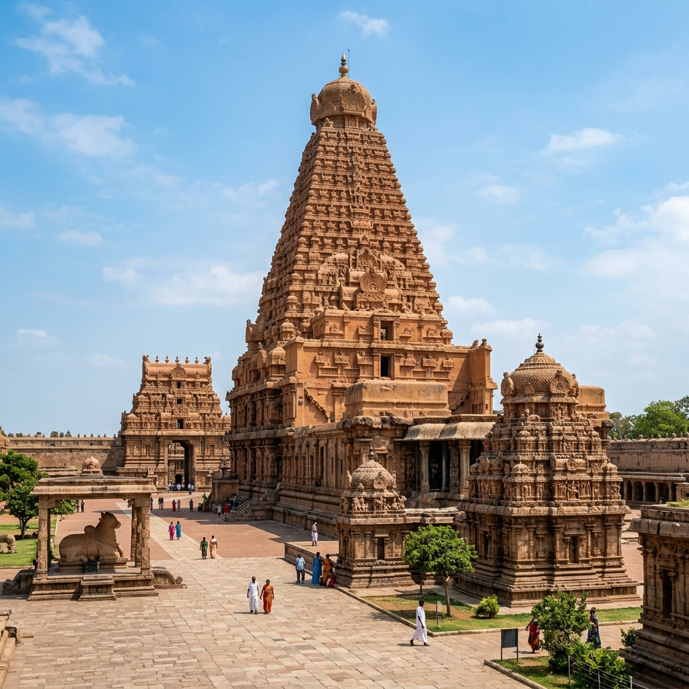

Thanjavur Brihadeeswara
Thanjavur, Tamil Nadu
The Sacred Legacy

The Brihadeeswara Temple at Thanjavur also known as the "Big Temple" (Periya Kovil) is one of the greatest architectural achievements in human history. Built by the Chola Emperor Raja Raja I in 1010 CE to commemorate his military and spiritual victories, this UNESCO World Heritage Site houses the largest Shivlinga in Tamil Nadu and one of the tallest temple towers in the world at 216 feet.
The most astonishing scientific feature of the Brihadeeswara is that its 216-foot Vimana casts NO SHADOW on the ground at noon on any day of the year a feat of precise astronomical calculation that indicates the temple's orientation was planned centuries before the construction began. The 80-tonne granite capstone at the apex was lifted to the top using a ramp stretching 0 km a construction achievement that remains a subject of active engineering research.
The Shadowless Tower
The 216-foot Brihadeeswara tower casts no shadow on the ground at noon due to its precise north-south alignment and the taper angle of the tower. This was not accidental it reflects the advanced astronomical and mathematical knowledge of the Chola builders who planned this as a demonstration of the Lord's all-encompassing divine radiance.
Chola Murals
The inner walls of the circumambulatory corridor contain extraordinary Chola-era murals depicting the 81 forms of Shiva's dance (Karanas), painted in the 11th century CE. Later Nayaka-era paintings overlay some of these, but both layers are being carefully documented and preserved by the Archaeological Survey of India.
Festivals
The annual Brihadeeswara Utsav in November-December celebrates the temple's completion by Raja Raja I with 10 days of processions, music, and classical dance. The Maha Shivaratri celebrations at this historic site are among the most atmosphere-rich in Tamil Nadu, combining living Hindu devotion with millennia of sacred history.
Raja Raja's Devotion
Emperor Raja Raja I whose personal Shiva devotion drove the creation of this temple endowed it with 600 daily service staff, elaborate gold and jewellery offerings listed in copper plate inscriptions, and systematic documentation of all rituals in stone inscriptions that are preserved to this day providing historians with extraordinary insight into Chola-era religious practice.
What the emperor built in stone was not merely a building it was a crystallised prayer: an architectural statement that glory has only one true source, and that source is the divine light of Lord Shiva himself. Inscribed Copper Plate, Raja Raja I, 1010 CE
How to Reach
Trichy Airport 0 km
Madurai Airport 0 km
Thanjavur Junction 0 km
From Chennai, Madurai, Trichy
From Trichy (0 km), Kumbakonam (0 km)
TNSTC buses from Chennai (0 km)
November to February
Brihadeeswara Utsav Nov/Dec